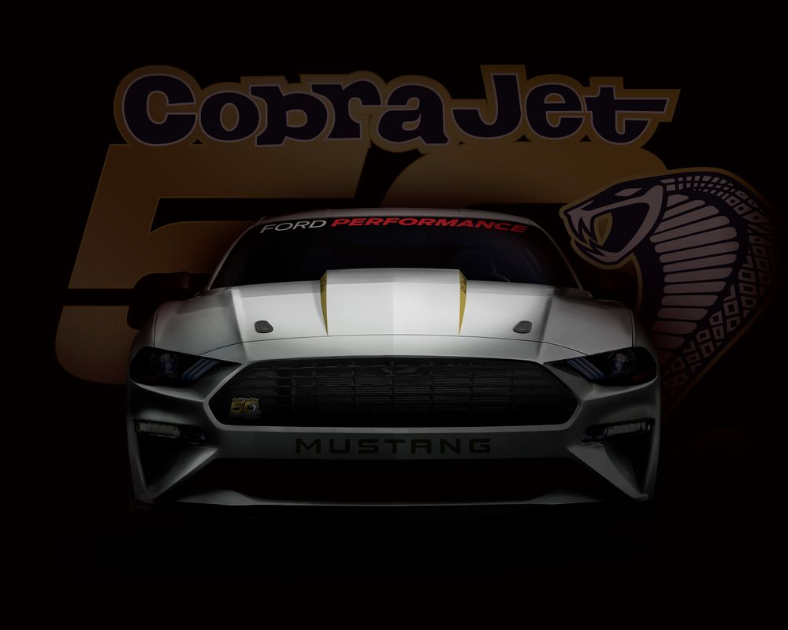
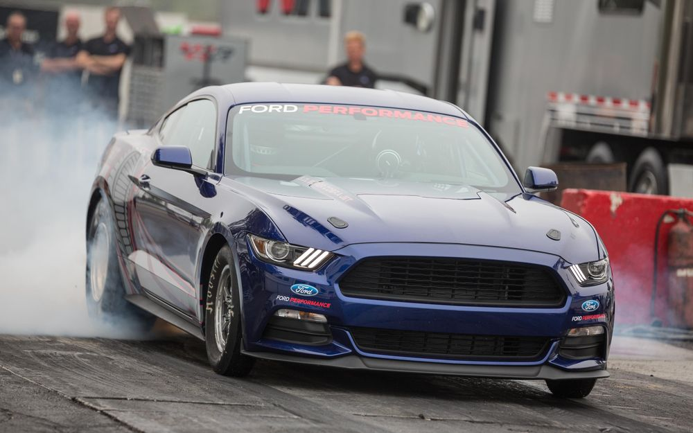

Ford's '8sec' Mustang Cobra Jet Wants To Cleanse The World Of The Demon
The next Ford Mustang Cobra Jet has been teased, and it'll be good for a "mid-8-second" quarter-mile

If the Dodge Challenger SRT Demon just isn’t as serious as you’d like, don’t worry: Ford has something far more extreme up its sleeve. It’s the 50th anniversary Mustang Cobra Jet, and it’s going to be rather brisk.
It’s lurking somewhere in the shadows of this teaser image, and Ford has already let slip a few tantalising details about the 2018 Mustang-based machine, ahead of full specs being revealed this summer. Most importantly, it’ll be capable of dispatching a standing quarter-mile in the “mid-8-second range,” crossing the line at over 150mph. Cripes.

This will be possible thanks to a supercharged version of Ford’s Coyote V8 5.2-litre V8, which will be fitted to the drag strip-ready Mustang along with new four-link suspension and a beefy solid rear axle. It’ll come with all the necessary safety gear too, including an NHRA-approved roll cage and FIA spec racing seats.
As with previous Cobra Jets, production will be limited: just 68 cars are set to be built.